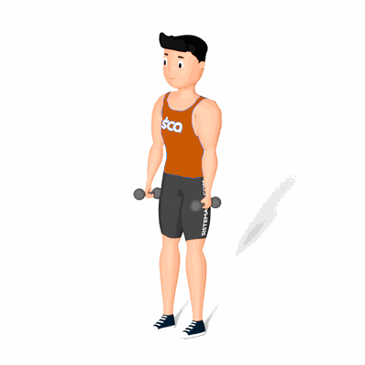

Elevação Lateral em Isometria

Esse exercício isométrico irá trabalhar o fortalecimento dos músculos da região dos ombros, com enfoque na lateral dos deltoides. Seus principais benefícios é auxiliar em tratamentos de reabilitação e o aumento da força máxima dos músculos dessa região.
Ficha Técnica
Tipo: Musculação
Grupo Muscular: Ombro
Aparelho: Nenhum
Músculos: Nenhum
Como realizar
- Na posição em pé com eles ligeiramente afastados, segure dois halteres com as palmas das mãos voltadas a lateral do corpo e com cotovelos ligeiramente flexionados;
- Manter a coluna reta, eleve os halteres lateralmente até altura em que os braços fiquem paralelos ao solo;
- Concentre o esforço na parte lateral dos deltoides e deixe os cotovelos imóveis;
- Mantenha nessa posição pelo tempo determinado pelo professor(a);
- Retorne à posição inicial de forma controlada.
 RC STORE
RC STORE